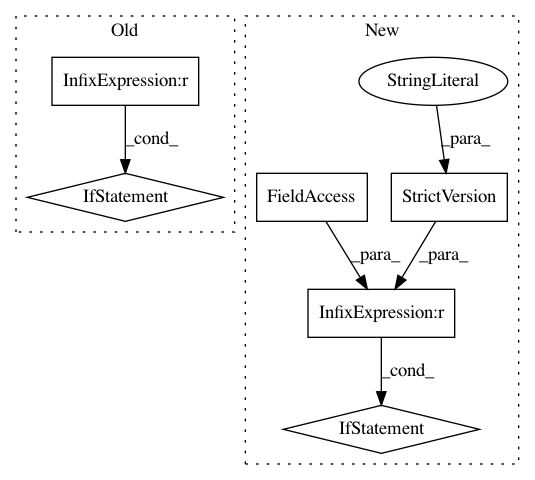

5f41a2bd185b946de113714910e1f5f2730d5f4b,onnxmltools/convert/sklearn/shape_calculators/SVM.py,,calculate_sklearn_svm_output_shapes,#Any#,14
Before Change
if operator.type in ["SklearnSVC"]:
check_input_and_output_numbers(operator, input_count_range=[1, None], output_count_range=[1, 2])
if N != 1 and N != "None":
// In this case, output probability map should be a sequence of dictionaries, which is not implemented yet.
raise RuntimeError("Currently batch size must be one")
if len(operator.outputs) != 2:
raise RuntimeError("Support vector classifier has two outputs")
if all(isinstance(i, (six.string_types, six.text_type)) for i in op.classes_):
operator.outputs[0].type = StringTensorType([1, 1])
After Change
if all(isinstance(i, (six.string_types, six.text_type)) for i in op.classes_):
operator.outputs[0].type = StringTensorType([N, 1])
if len(operator.outputs) == 2:
if operator.targeted_onnx_version < StrictVersion("1.2"):
// Old ONNX ZipMap produces Map type
operator.outputs[1].type = \
DictionaryType(StringTensorType([1]), FloatTensorType([1]))
else:
// New ONNX ZipMap produces Seq<Map> type
operator.outputs[1].type = \
SequenceType(DictionaryType(StringTensorType([1]), FloatTensorType([1])), N)
elif all(isinstance(i, (numbers.Real, bool, np.bool_)) for i in op.classes_):
operator.outputs[0].type = Int64TensorType([N, 1])
if len(operator.outputs) == 2:
if operator.targeted_onnx_version < StrictVersion("1.2"):
In pattern: SUPERPATTERN
Frequency: 3
Non-data size: 6
Instances
Project Name: onnx/onnxmltools
Commit Name: 5f41a2bd185b946de113714910e1f5f2730d5f4b
Time: 2018-05-19
Author: wschin@outlook.com
File Name: onnxmltools/convert/sklearn/shape_calculators/SVM.py
Class Name:
Method Name: calculate_sklearn_svm_output_shapes
Project Name: onnx/onnxmltools
Commit Name: 50aa0b2c6220b018d341e02c283099727463dc05
Time: 2018-05-29
Author: wschin@outlook.com
File Name: onnxmltools/convert/coreml/operator_converters/neural_network/Pool.py
Class Name:
Method Name: convert_pooling
Project Name: onnx/onnxmltools
Commit Name: 5f41a2bd185b946de113714910e1f5f2730d5f4b
Time: 2018-05-19
Author: wschin@outlook.com
File Name: onnxmltools/convert/sklearn/shape_calculators/LinearClassifier.py
Class Name:
Method Name: calculate_sklearn_linear_classifier_output_shapes